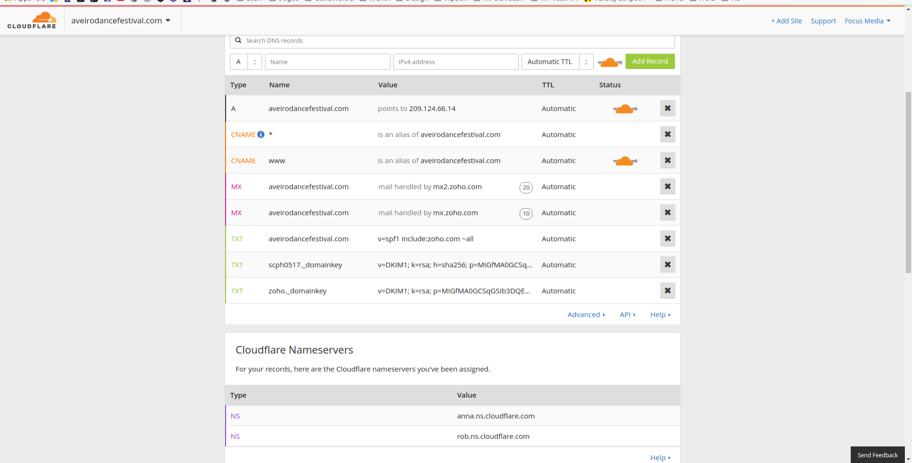

Deployment de um site
Instalar e Activar o plugin "Duplicator" no site desenvolvido localmente
Criar um novo package no plugin e seguir os passos

Fazer download dos ficheiros criados (Ficheiros do site e Base de Dados)

Aceder ao cPanel e selecionar o Administrador de Ficheiros

Fazer upload dos ficheiros do site

No cPanel ir ao phpMyAdmin

Na tabela "options" alterar os URL's

Adicionar novo site na Cloudflare

Adicionar DNS's para o novo site
Para colocar HTTPS na Cloudflare é necessário adicionar uma "Page Rule"
No novo site, adicionar o plugin "Search & Replace" para subsituirmos todos os url's


Executar uma pesquisa na base de dados a subsituir o antigo URL pelo novo
Uma lista que todos deviamos correr quando colocamos um site online
http://wpsecuritychecklist.org/br/items/
Criação de um produto digital
- Loja Online com WooCommerce
- Moeda: Euro
- Só produtos digitais
- Limitar a 100 downloads
- Fazer um coupon de desconto 100%
- https://themeisle.com/themes/shop-isle/
Neste exemplo usou-se um tema para acelerar o processo
(Shopisle : https://themeisle.com/themes/shop-isle/)
Após instalar o Woocommerce, criar um produto novo
Neste exemplo iremos vender uma imagem
Preencher os dados (Preço), adicionar "Product Image" e adicionar ficheiro (este será o produto digital que estaremos a vender)
Não esquecer de fazer check em "Virtual" e "Downloadable"
O nosso produto irá ser exibido automaticamente na página da loja e, após fazer o pagamento, o utilizador pode fazer download da imagem.